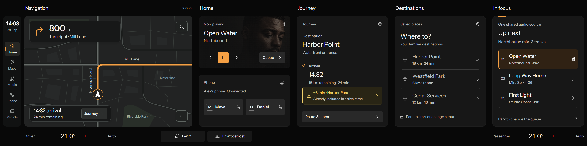

Now playing
Open Water
Northbound
Flat black and charcoal surfaces. Softly rounded controls. A deliberate orange accent. Polestar 2-inspired foundations for our fixed-size infotainment displays.
Northbound
Flat tiles group related information. Orange marks selection and deliberate actions; white typography establishes hierarchy. Artwork stays within Media.
Shared foundations for both native dashboard sizes.
Neutral dark foundations, orange interaction states and separate route and warning colours.
#080808#171717#292929#F4F4F4#F5A044#BDBDBD#393939#797979#302214#101010Orange marks selection and primary actions. Yellow caution also uses a warning icon and explicit text. Orange also identifies the route and guidance; warnings use yellow with explicit labels. All values are our interpretation, not official Polestar tokens.
Flat neutral surfaces, aligned edges and no glossy gradients or bevels.
01 / CanvasThe continuous background.Flat fill · no elevation
02 / CardThe default content surface.Flat fill · no elevation
03 / RaisedControls and elevated content.Flat fill · no elevation
Surface borders group content. Interactive control borders use a stronger token. Photographic and map backgrounds need a separate contrast treatment; a surface token alone is not enough.
Instrument Sans is our existing licensed substitute, not Polestar’s font. Regular and medium weights; hierarchy comes from size and spacing.
Font bundled locally under the SIL Open Font License. These are pixel roles for this prototype; physical in-vehicle legibility requires separate validation.
16px card corners, 10px control corners, 6px small details and a 4px spacing unit. Circular geometry is reserved for inherently circular graphics.
24px default card inset; 16px control grouping; 32px between major layout groups. Preserve these values across both display profiles.
Original SVG icons. A 24-unit grid, 1.75-unit stroke, square caps, miter joins and optical consistency.
Use 24–32px icons within larger controls. Navigation emphasis may use a larger icon. Do not equate the visible glyph with its clickable area.
Live specimens: playback, switches, tabs, list selection and temperature respond to input.
Select a control to inspect its response.
Native-size widget studies. The geometry comes from our accepted two-display system.
These are catalogue studies, not a second dashboard layout. The applied dashboard combines guidance with its 824 × 544 map, stacks Media and Phone at 448 × 256 each, and uses 448 × 544 summary and detail panels.
HMI rules belong to components and states, not just the colour palette.
40px maneuver distance in the applied map; 64px in the standalone study. 32px destinations. 24px list content. Secondary labels stay at 18–20px. No tiny tracked capitals copied from the reference.
56px standard actions, 64px playback and rectangular climate controls. Selected, pressed and keyboard-focus states remain distinct. Hover is optional feedback, never the only cue.
Queue editing and place selection are disabled while driving in this concept. A lock and “Park to edit” explain why. Passenger-side placement does not bypass this rule.
1920 × 720 and 2880 × 720 share identical widget bounds. Fixed 48px task headers are a documented constraint. Added width reveals the existing task views.
These are prototype pixel rules. They do not establish physical reach, touch accuracy, distraction performance or vehicle compliance. Semantic colour specimens are illustrative and do not specify production telltale requirements.
Open the paired dashboard →Media, Phone, Journey and Saved Places. Scoped details keep navigation and climate available.

The map and Media/Phone stack stay fixed. At 1920, Journey shares its column with Saved Places and details. At 2880, those existing views can coexist.
Open the current dashboard →Components keep their complete bounds. More width changes visibility and arrangement, not scale.
| Component | Width × height | Reuse rule |
|---|---|---|
| status | 448 × 48 | Identical at 1920 and 2880 |
| maneuver | 448 × 232 | Identical at 1920 and 2880 |
| media | 448 × 296 | Identical at 1920 and 2880 |
| mapHeader | 824 × 48 | Identical at 1920 and 2880 |
| map | 824 × 544 | Identical at 1920 and 2880 |
| panelHeader | 448 × 48 | Identical at 1920 and 2880 |
| taskPanel | 448 × 544 | Identical at 1920 and 2880 |
| climate | 448 × 64 | Identical at 1920 and 2880 |
| navigation | 88 × 544 | Identical at 1920 and 2880 |
| comfort | 448 × 64 | Identical at 1920 and 2880 |
| homeWidget | 448 × 544 | Identical at 1920 and 2880 |
| navigationGuidance | 448 × 104 | Identical at 1920 and 2880 |
| routeSummary | 568 × 88 | Identical at 1920 and 2880 |
| compactMedia | 448 × 256 | Identical at 1920 and 2880 |
| compactPhone | 448 × 256 | Identical at 1920 and 2880 |
Official Polestar 2 reference images inform the flat surfaces, rectilinear controls, typography hierarchy and orange state treatment. We retain our landscape layout and fixed component bounds. This is an independent interpretation, not Polestar source code or a compliance claim.
Reference: Polestar 2 — Technology. The palette, dimensions and component code here are an original interpretation. No Polestar logos, proprietary fonts or screenshots are embedded.